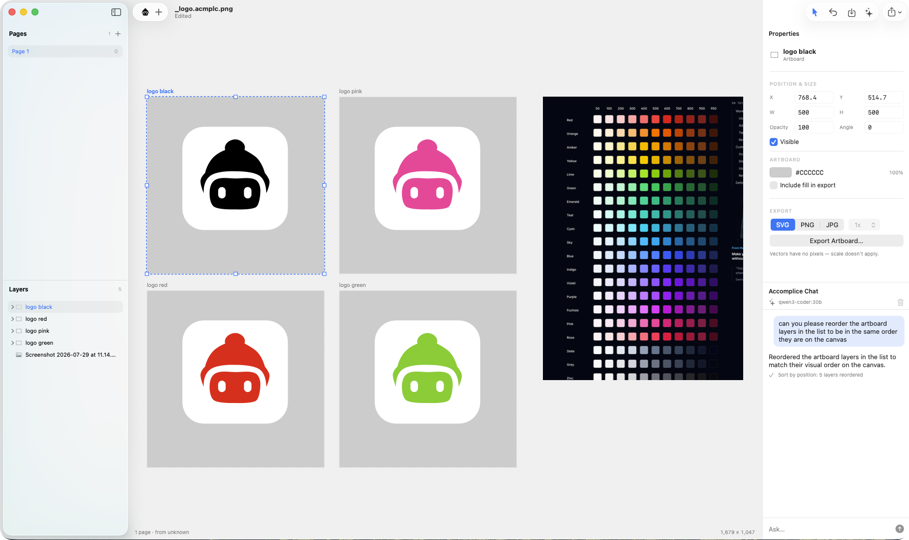

Design tools used to do both, in one canvas, on your machine. Accomplice picks up where Fireworks and early Sketch left off — pixels and paths side by side, files that stay yours, and nothing between you and the work.
Local, fast, and yours. Made for the Mac.

It was discontinued in 2013 because it belonged to a company whose plans changed. Nothing since has wanted to be what it was: one person, one file, pixels and paths in the same canvas, assets out the door by lunch. Early Sketch came closest — before it became a platform.
I know how that story ends, because more than half the design files on my own disk are in formats that no longer open. The work didn’t wear out. The software left.
So Accomplice is built so it can’t happen again. Every document is a PNG with the source riding inside it — the file is its own preview, and every page ships as plain SVG in the archive. If the app vanished tomorrow, your artwork doesn’t: unzip it. No app required, ten years from now.
This tool is aimed at one person making one file. Being clear about the edges is the point.
Subtract one shape from another and both stay editable — double-click straight into the combined shape, even into the holes. Corner radius stays a number. A star remembers its point count. Erasing a photo never destroys a pixel underneath.
One file per document, in a folder you chose. It previews in Finder because it is a PNG. Diff it, commit it, email it, back it up. What you see on canvas and what exports are drawn by the same code, so they can never disagree.
Rename forty layers. Reorder the list to match the canvas. Swap the template text on every artboard. It runs against a model on your own machine, it never touches the canvas unless you ask, and every change is one ordinary undo step.
An accomplice does the work and never asks for credit.